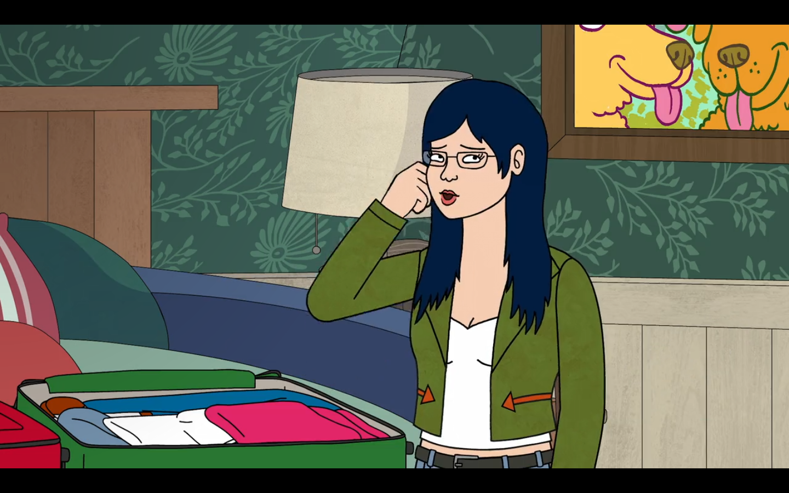
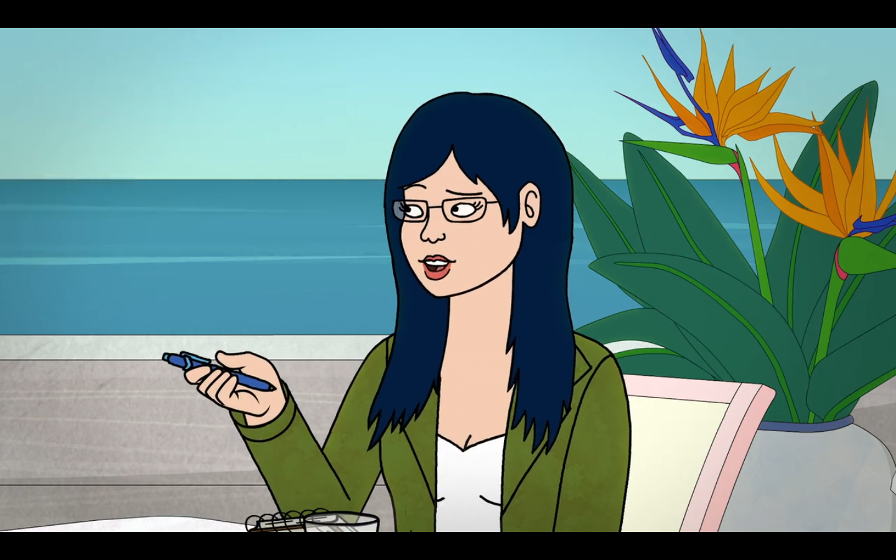
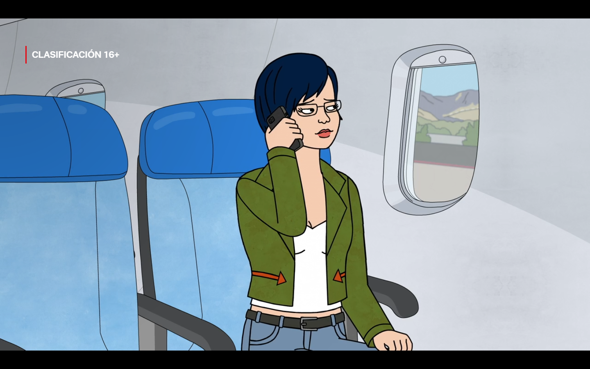
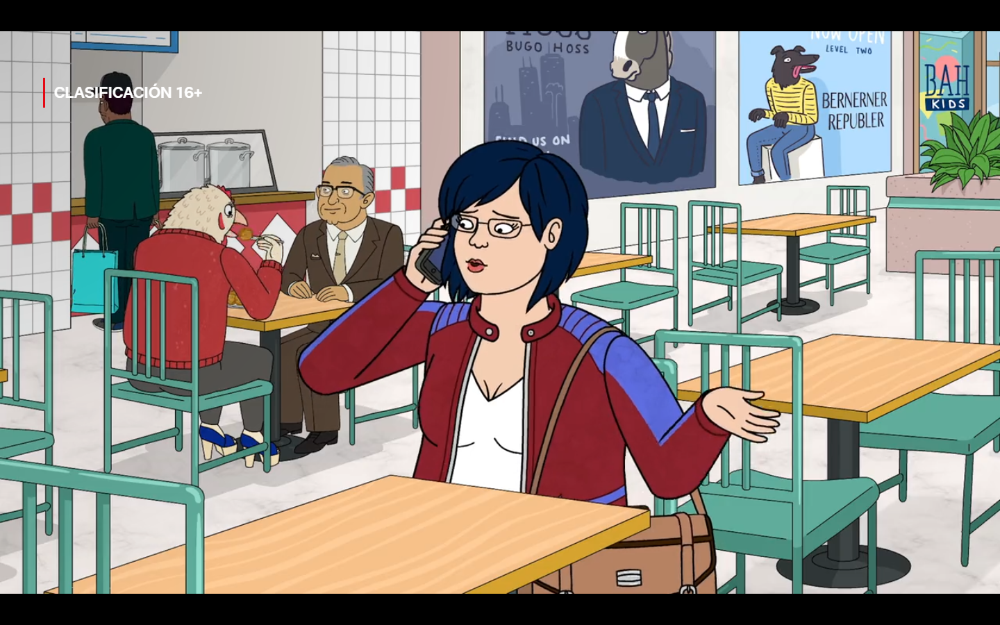
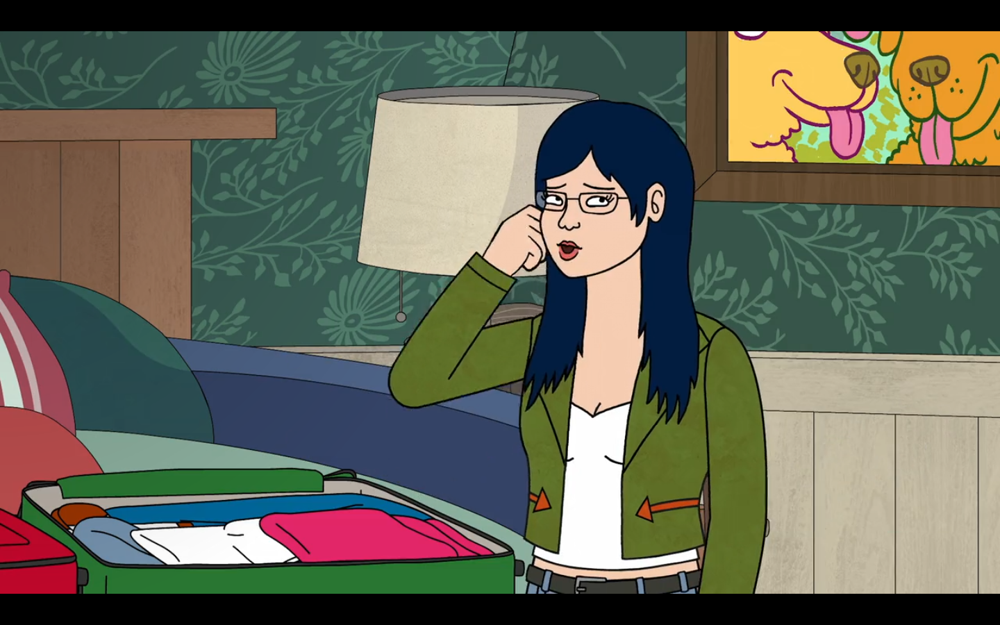
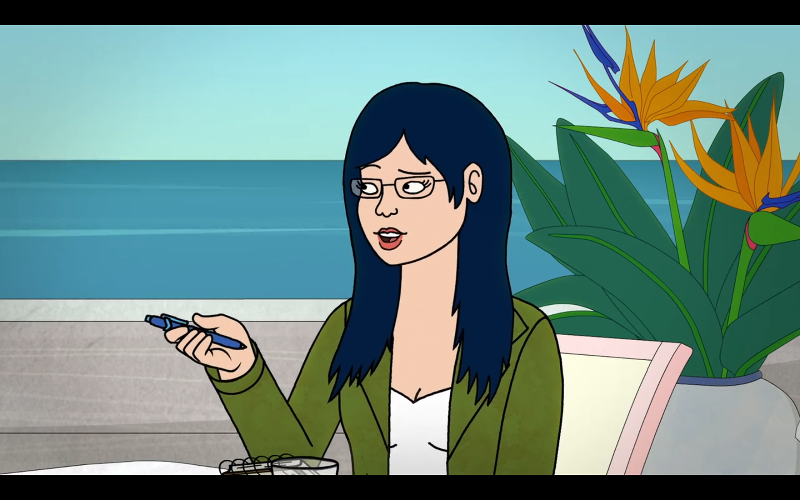
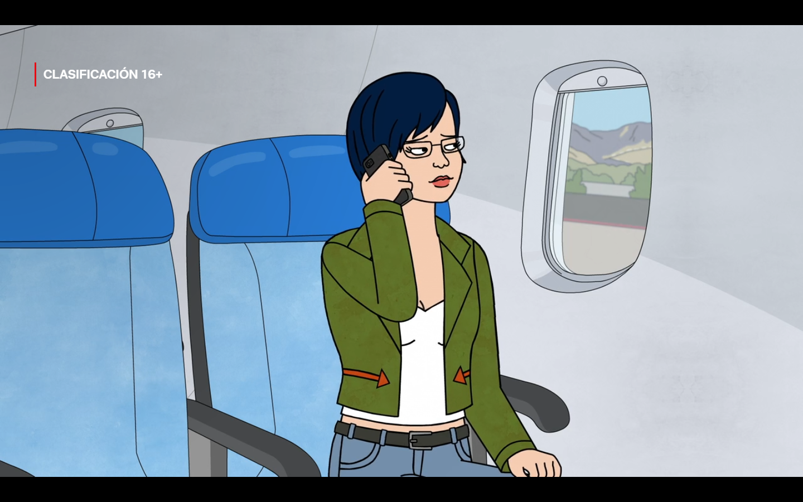
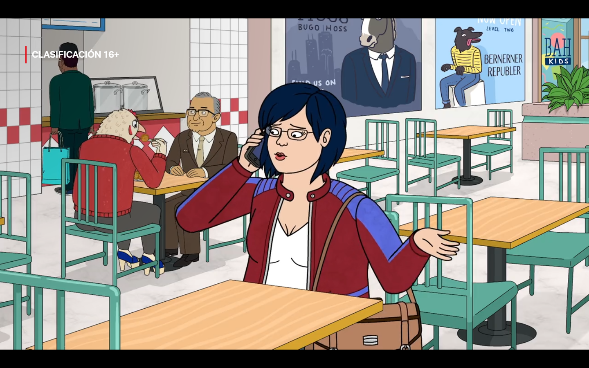

Temporada 1 - Diane
Al comienzo de la serie, en 2014, Diane se encuentra con BoJack por segunda vez y la editorial de BoJack, Pinky Penguin, la contrata para escribir la autobiografía de BoJack, que se supone que servirá como su regreso. Al principio, los dos desarrollan una fuerte amistad: BoJack alberga sentimientos por Diane y Diane alienta a BoJack, por primera vez, a hablar con sinceridad sobre sí mismo y sobre su pasado, incluido su comportamiento de mierda y su infancia abusiva.
En Live Fast, Diane Nguyen, el padre de Diane, muere. Ella y BoJack, después de reunirse con Pinky en Nueva York, se detienen en Boston para que Diane le dé rápidamente sus condolencias. Es la primera vez que Diane visita a su familia en cinco años. Sin embargo, sus hermanos la hacen planificar el funeral y BoJack termina uniéndose a ellos, ya que siempre quiso hermanos. Después de que Diane hace arreglos para organizar un funeral para su padre, ninguno de su familia se presenta y el cadáver de su padre está ausente.
Temporada 2 - Diane
La temporada 2 comienza con Dianecomenzando su trabajo como consultora de personajes en el programa de televisión Secretariado, pero para su consternación, le asignan tareas menores, como decirle a la gente que no se tropiece con un cable. Durante un descanso, recibe una llamada de Sebastian St. Clair, quien le dice que está molesto porque ella rechazó ir a North Cordovia. Diane se disculpa y dice que no podía dejar todo de una vez. Dice que estará allí en tres meses después de que termine la filmación.
En Yesterdayland, pone los ojos en blanco ante BoJack y Wanda, y dice que la primera mujer con la que BoJack estuvo que tiene su edad es una joven de veinte años con retraso en el crecimiento, ya que Wanda acaba de despertar de un coma de treinta años. Kelsey responde que él también está emocionalmente atrofiado debido a su fama.
Temporada 3 - Diane
Sin embargo, en la temporada 3, su matrimonio parece estar tenso por la mentira de Diane, ya que los dos (normalmente el Sr. Peanutbutter) se llaman constantemente para ver cómo están el uno al otro y dicen que entienden y respetan lo que tienen que decir, y comienzan a ir a terapia de pareja.
En Start Spreading The News, Diane se involucra en una conferencia telefónica con el Sr. Peanutbutter y BoJack y Ana, los dos últimos de los cuales están en Nueva York. Después de que Diane, que está en VIM, habla con el Sr. Peanutbutter, que está en MBN, él piensa que ella también está en Nueva York, pero rápidamente le dice que no la está acusando y que se siente mejor cuando sabe dónde está. Diane acepta esto y le asegura que no está en Nueva York.
Temporada 4 - Diane
En la temporada 4, Diane ha comenzado su trabajo escribiendo para Girl Croosh, aunque sus artículos sobre problemas del mundo real suelen ser pasados por alto por los lectores en favor de artículos más triviales y superficiales relacionados con chismes de celebridades y listas de los diez mejores.
A lo largo de See Mr. Peanutbutter Run, se escucha una voz en off de sus mensajes de voz a BoJack, quien ha desaparecido, manteniéndolo al tanto de todo lo que está sucediendo. En un momento, dice: "Sabes, es gracioso, porque la última vez que te vi, me dijiste que me necesitabas en tu vida, y luego simplemente desapareciste. Entonces, ¿cómo crees que me hace sentir eso? Bueno, donde sea que estés, espero que seas feliz. De verdad, BoJack".
Temporada 5 - Diane
Mientras se ultiman los trámites de divorcio con el señor Peanutbutter, Diane se muda a un apartamento estudio de mala muerte. Poco antes, cena con el señor Peanutbutter, con quien mantiene una buena relación, aunque le molesta que él y la camarera, Pickles, una joven pug excitable, se lleven bien. Diane le da la idea de hacer una fiesta de inauguración de la casa y ella acepta ir.
BoJack la ayuda a mudarse a su apartamento y, tras expresar su desdén por su apartamento de mala calidad, le dice que si alguna vez quiere quedarse en su casa, puede hacerlo. Diane invita a BoJack a que la acompañe a la fiesta de inauguración de la casa del señor Peanutbutter. Luego va a GirlCroosh, pero ve que han puesto una carpa en la oficina y Stefani le dice que trabaje desde casa durante el próximo mes.
Temporada 6 - Diane
Diane viaja por todo el país filmando videos de denuncia para GirlCroosh, junto a un camarógrafo llamado Guy, un bisonte de Chicago que está divorciado y tiene un hijo, con quien finalmente comienza a salir. Los dos hacen una parada en Chicago. Mientras están en Parmadillos, Stefani los llama para decirle a Diane que, si bien le encantan los videos contundentes que está produciendo, debería intentar hacer más historias que le hagan sentir bien.
Historias diciendo que, si bien le encantan las historias serias que cubre Diane, también le gustaría que hubiera más historias que le hicieran sentir bien. Diane contrarresta esto diciendo que las historias que están cubriendo realmente están marcando una diferencia. Stefani le dice a Diane que las noticias serias la están deprimiendo. Diane duda, pero Guy la anima a seguir adelante.
Temporada 1 - Bojack
En 2014, BoJack sigue atrapado en una vida cínica y depresiva y pasa sus días en el sofá bebiendo mucho y comiendo en exceso. También ve repeticiones de su programa en decadencia en un intento de vivir en su pasado. Todd todavía vive con él. BoJack realmente se preocupa por Todd, a pesar de menospreciarlo constantemente. No quiere que Todd lo deje, por miedo a la soledad.
En el primer episodio, la princesa Carolyn abandona a BoJack y le dice que, además de muchas otras razones, le da miedo el compromiso y que se odia demasiado a sí mismo como para dejar que otras personas lo amen. Sin embargo, más adelante en el episodio siguen durmiendo juntos y en Zoës y Zeldas.
Temporada 2 - Bojack
En la segunda temporada, BoJack intenta mejorar, adoptando una "actitud completamente nueva", aunque esto se ve obstaculizado en su primer día en el set cuando no puede decir correctamente la frase "¿Qué estás haciendo aquí?". Un accidente en el set hace que la filmación se detenga durante dos días, y cuando le pide consejo a Diane, ella le pregunta qué hizo cuando actuó en Horsin' Around.
BoJack recordó una conversación que tuvo con Herb después de invitar a su madre a una grabación, pero ella siguió criticándolo y menospreciándolo. Herb le dijo que era bueno dando en el blanco y que, por ahora, como era una comedia, no tenía que preocuparse por ser un "actor de verdad". En el presente, BoJack llegó a la conclusión de que no era un actor de verdad y sigue estresado por el hecho de que la película puede ser su última oportunidad de ser feliz.
Temporada 3 - Bojack
En la temporada 3, se ve a BoJack promocionando la película de la Secretaría y se enoja con varias entrevistas. BoJack había contratado a Ana Spanakopita como su publicista y están trabajando para conseguirle una nominación al Oscar.
La mayoría de los entrevistadores le preguntaron a BoJack sobre Horsin' Around y él lo defendió. Ana le dijo que dejara de defender el programa, alegando que ahora era más que una estrella de comedia. Mientras estaba en Nueva York, Nueva York, decide ver una obra de su vieja amiga Jill Pill. Trabajaron juntos en el BoJack Horseman Show. Jill le pidió que visitara a Cuddlywhiskers, quienes crearon el BoJack Horseman Show.
Temporada 4 - Bojack
La temporada 4 comienza con la revelación de que BoJack ha estado desaparecido durante un tiempo. En el segundo episodio, se retoma donde terminó la temporada 3. BoJack recibe una llamada de Diane, pero la ignora. Después de ver a los caballos salvajes irse, conduce más arriba por la carretera, a través del país. Llega a Harper's Landing, Michigan, y se aloja en la casa del lago en la que él y su madre se quedaron durante los veranos de su infancia, que se ha ido deteriorando y agotando en las últimas décadas.
Se queda allí durante más de un año, sin revelar su identidad y convirtiéndose en una persona legalmente desaparecida. Conoce a Eddie, una libélula que vive al lado. Aunque es un poco gruñón, ayuda a BoJack a arreglar la casa. No se va de la orilla del lago porque se niega a volar, aunque BoJack dice que podría tomar un avión.
Temporada 5 - Bojack
BoJack es la estrella de Philbert, que se estrena como el primer programa original en el nuevo servicio de transmisión de WhatTimeIsItRightNow.com. También está tratando de reducir el consumo de alcohol, solo bebe una botella por semana marcando las cantidades asignadas para cada día en las botellas. Él y Hollyhock, que ahora asiste a la universidad en Wesleyan University, se llaman todos los domingos.
Mientras se ultima su divorcio con el Sr. Peanutbutter, BoJack ayuda a Diane a mudarse a un apartamento estudio destartalado, por lo que se burla de ella. Después de decirle que puede quedarse en su casa cuando quiera, acepta su invitación a la fiesta de inauguración de la casa del Sr. Peanutbutter. Diane termina apareciendo en su casa, ya que la suciedad de su apartamento la distrae de hacer cualquier trabajo. Los dos terminan pasando la noche emborrachándose.
Temporada 6 - Bojack
En 'A Horse Walks into a Rehab', BoJack se interna en un centro de rehabilitación y sufre síntomas de abstinencia, por lo que no puede realizar las actividades que allí se realizan, como todo el mundo. Se muestra que BoJack está un poco mejor y hay un montaje en el que se lo ve haciendo actividades como caminatas por la naturaleza, debates en grupo y yoga.
Más tarde, se ve a BoJack en una sesión de terapia grupal, donde el caballo de terapia, el Doctor Champ, les dice que en rehabilitación hay un dicho que dice que "todos toman una ruta diferente para llegar a Soberopilis, EE. UU." El Doctor Champ luego le pregunta a BoJack sobre la primera vez que bebió. BoJack desvía la atención y dice en tono de broma: "¿Cuándo no fue la primera vez que bebí?". El grupo se ríe de esto.
Temporada 1 - Todd
En algún momento antes del primer episodio, Todd se involucró con un poderoso cartel de drogas, lo que lo dejó para organizar una fiesta de quince años para la hija adolescente del líder. También una vez se involucró con la mafia rusa. Todd es visto como amigable y relajado con BoJack y lo considera un mejor amigo. BoJack, a pesar de que también se refiere a Todd como su mejor amigo, constantemente expresa desdén y enojo hacia él. BoJack le dice a Todd que "limpie su mierda", hasta un punto en que BoJack podría ser considerado abusivo con Todd. También se ve a Todd involucrarse en las payasadas y los planes de BoJack.
En Zoës and Zeldas, Todd revela que tiene una ópera rock, "Newtopia Rising, Book 1: The Search for a New Utopia". Al principio, BoJack la critica duramente, después de que Todd la interpreta frente a todos. Sin embargo, decide ser el mentor de Todd y ayudarlo a refinar su ópera rock. Durante este tiempo, Todd le revela a BoJack cómo se volvió adicto a Decapathon y cómo eso arruinó su vida. Princess Carolyn contrata a Todd como uno de sus clientes e invita a un famoso nombre en las óperas de rock, Virgil Van Cleef, a ver su próximo ensayo.
Temporada 2 - Todd
En Brand New Couch, Todd entra por la puerta principal cubierto de tierra y se pregunta por qué se despertó en un callejón. BoJack explica que tuvo que deshacerse del viejo sofá porque era una metáfora de su antigua actitud y que escuchó mal su audiolibro que le decía que tenía que deshacerse de las cargas de su vida "hasta ahora" con "sofá". Todd no está seguro de si le gusta el nuevo sofá y dice que simplemente dormirá en el auto de BoJack. Más tarde decide que el nuevo sofá es bueno después de todo.
En Yesterdayland, BoJack le pide a Todd que lo lleve a su auto mientras él se estrella contra una fuente y toma un Uber para volver a casa, pero Todd se niega diciendo que tiene que montar su nuevo parque temático. En el pasado, BoJack le dijo a Todd que Disneyland no existía. Entonces, durante los últimos cinco años, Todd ha estado trabajando en su propia versión del Disneyland "real", aunque BoJack no tiene ningún recuerdo de ello a pesar de que lo menciona constantemente y lo construye con abejas obreras en voz muy alta.
Temporada 3 - Todd
En 'Start Spreading The News', BoJack va a Nueva York para promocionar a Secretary y encuentra a Todd en su maleta. BoJack se pregunta cómo llegó allí. Aparentemente, Todd se emborrachó con una mezcla de alcohol que BoJack preparó para quedarse dormido, se desmayó y cayó dentro de la maleta. Todd termina perdiéndose en el hotel y la mayor parte de su trama gira en torno a encontrar el camino de regreso a la habitación. En BoJack Kills, Todd y el Sr. Peanutbutter se encuentran en una situación apestosa cuando son atacados por un zorrillo.
La princesa Carolyn aparece en la casa del Sr. Peanutbutter y la encuentra oliendo a zorrillo y marihuana (cortesía de Todd fumando un porro) y llena de coladores de espagueti. El Sr. Peanutbutter expresa su preocupación de que él y Diane puedan terminar divorciándose si estallan más peleas entre ellos y pide ayuda para eliminar el olor a zorrillo antes de que ella regrese a casa. Carolyn sugiere que se den un baño de tomate. Todd está entusiasmado con la idea debido a que está drogado con marihuana.
Temporada 4 - Todd
Todd ahora vive con Diane y el Sr. Peanutbutter. En See Mr. Peanutbutter Run, se muestra que Todd se siente incómodo con ser "etiquetado" como asexual cuando Emily hace esto mientras almuerza con él cuando ella dice que no está buscando un novio asexual. Sin embargo, ella usa una parte de sus ocho millones de dólares para construirle a Todd un "trono de drones", una idea que él le planteó durante el almuerzo.
Todd disfruta de usar su trono de drones hasta que deja caer el control remoto, atrapándolo en el cielo con una bolsa gigante de palomitas de maíz que ella robó. Termina chocando e interrumpiendo la carrera de esquí entre el Sr. Peanutbutter y Woodchuck Coodchuck-Berkowitz, donde el ganador se convertiría en gobernador. Todd termina cruzando la línea de meta y se convierte en gobernador, pero renuncia segundos después porque no quiere el puesto.
Temporada 5 - Todd
En la escena de la bombilla, en el apartamento de la princesa Carolyn, ella se va mientras Yolanda y Todd se preparan para el día. Yolanda está preocupada de que Todd no esté haciendo nada particularmente útil con su día. Emily y su musculoso novio bombero, Steve, salen a cenar con Yolanda y Todd. A Todd se le ocurre la idea de crear una aplicación de citas para asexuales. Yolanda dice que los asexuales que no son también arrománticos son una base de usuarios pequeña, pero Todd dice que es una gran idea. Afirma que de lo contrario, los asexuales simplemente se conformarían con otros asexuales que conozcan, incluso si no tienen nada más en común. Yolanda dice a la defensiva que eso podría ser algo bueno.
Yolanda y Todd conducen a casa. Yolanda le dice a Todd que se siente rara porque Todd no tiene un trabajo ni una dirección en la vida. Todd llega a casa y encuentra a BoJack esperando a la princesa Carolyn. Le pide a BoJack que lo ayude a encontrar un trabajo. BoJack le dice que vaya a una entrevista de trabajo en What Time Is It Right Now.com como conserje para poder colarse en la oficina de uno de los ejecutivos y poder enviar un correo electrónico a Flip prohibiéndole filmar más escenas de desnudos.
Temporada 6 - Todd
En 'A Horse Walks into a Rehab', BoJack llama a Diane para que la ayude a averiguar dónde está la casa del padre de Jameson. Diane dice que está segura de que BoJack tiene una razón para localizar a una chica en mitad de la noche, sin embargo, no puede ayudarlo. BoJack luego dice que Todd lo ayudará y le pide a Diane que los conecte ya que no puede recordar el número de celular de Todd. Diane luego lo conecta con Todd. BoJack le dice a Todd que necesita un hacker, y Todd le dice que no es el tipo de hacker que está buscando. Todd luego le cuenta una historia sobre la vez que ingresó accidentalmente en una competencia de hacky sack y ganó por defecto, porque el ruso contra el que competía tuvo un ataque cardíaco. La princesa Carolyn luego llama a Todd y le pregunta si consiguió la leche de puercoespín del mercado negro. Todd le dice que la consiguió, pero que no está ansioso por viajar en autobús a través de Porcupine Town. Todd termina aplastado entre las púas de dos puercoespines.
En El nuevo cliente, se ve a la princesa Carolyn abrumada, ya que tiene que llevar al bebé con ella al trabajo, debido a que no tiene una niñera, y también al hecho de que ni ella ni el bebé pudieron dormir. Todd dice que eso suena divertido y que tiene que ir a muchas reuniones, a las que se refiere como el Día de Todd. Explica, diciendo que mucha gente quería reunirse con él después de que lo despidieran de WhatTimeIsItRightNow.com. La princesa Carolyn le dice que es maravilloso y que se divierta fracasando hacia arriba, mientras se dirige hacia la puerta con el bebé. Todd responde que siempre lo hace. La princesa Carolyn tiene que ir a una sesión de fotos, luego llama a Todd, pidiéndole que cuide al bebé durante una hora aproximadamente, diciéndole que se encontrará con él en VIM en quince minutos.
Temporada 1 - Mr. Peanutbutter
En el primer episodio, que tiene lugar en 2014, contratan a Diane para escribir la autobiografía de BoJack. Los dos se llevan bien cuando se conocen en una fiesta organizada por Todd. BoJack, en particular, parece sentirse atraído por Diane, aunque para su envidia y disgusto, ya que vomita después de descubrir esto, ella está saliendo con el Sr. Peanutbutter. En BoJack Hates the Troops, filmó brevemente para un reality show titulado Peanutbutter and Jelly.
En Zoës and Zeldas, el ex novio de Diane, Wayne, sigue al Sr. Peanutbutter mientras afirma que está escribiendo un artículo de Buzzfeed sobre él. Sin embargo, Diane se da cuenta de que las notas que tomó eran todas un galimatías y admite que quería volver con ella. Wayne le dice que ella y el Sr. Peanutbutter no son el uno para el otro, utilizando la comparación de "Zoë y Zelda". Esto se refiere a las hermanas gemelas del programa Mr. Peanutbutter's House: Zelda era una extrovertida feliz, Zoë era una introvertida cínica. Él le dice que Mr. Peanutbutter es un "Zelda" y que él y Diane son "Zoës", y que cuando ella se dé cuenta de eso, lo llame. Él se va y se revela que Mr. Peanutbutter escuchó todo. Él dice alegremente: "¡Me gusta ese tipo!".
Temporada 2 - Mr. Peanutbutter
Mr. Peanutbutter comienza la segunda temporada usando un cono para perros, después de tener que recibir puntos de sutura en su brazo después de golpear un espejo mientras estaba borracho; ya que pensó que su reflejo era otro perro. Se lo quita en el siguiente episodio, Yesterdayland, donde también quiere involucrarse con Todd's Disneyland porque lo construyó mientras trabajaba para PB Livin' y Todd, que quería que fuera su propio negocio, acepta de mala gana.
Mr. Peanutbutter llama a un abogado para asegurarse de que Disneyland sea legal. El abogado le informa a Todd que no es legal y que lo verá en la corte. Todd evita la demanda porque Walt Disney escribió accidentalmente el nombre incorrecto para la marca registrada, "Diisneyland". Todd celebra su victoria legal con una fiesta en la casa de BoJack. Enfadado, le dice a Mr. Peanutbutter que él hizo todo el trabajo y lo echa del parque temático. Sin embargo, va allí al día siguiente y se disculpa con Todd. Él acepta y el Sr. Peanutbutter lo rescata cuando el parque comienza a desmoronarse y arder.
Temporada 3 - Mr. Peanutbutter
La temporada 3 muestra que el matrimonio de Mr. Peanutbutter y Diane se ha vuelto tenso debido a que Diane no regresó a casa inmediatamente después de dejar Cordovia, y como tal, hacen llamadas telefónicas constantes con ellos asegurándose mutuamente que entienden sus sentimientos y Diane le asegura su ubicación y cuándo estará en casa, ya que ahora se preocupa cuando no sabe dónde está. En Start Spreading The News, Mr. Peanutbutter, en una reunión en MBN con Pinky Penguin y J.D. Salinger, accidentalmente entra en una conferencia telefónica con Diane y la Princesa Carolyn, y BoJack y Ana, con los dos últimos, están en Nueva York cuando la Princesa Carolyn quería ponerlo en espera.
Mr. Peanutbutter comienza a hablar con BoJack, y después de que Diane habla con Mr. Peanutbutter, él piensa que ella también está en Nueva York, pero rápidamente le dice que no la está acusando y que se siente mejor cuando sabe dónde está. Diane acepta y le asegura que no está en Nueva York. Mientras tanto, en MBN, Pinky revela que lo ascendieron a jefe de programación, ya que Wanda dejó MBN y fue contratada por otra cadena y se mudó a Detroit. Sin embargo, J.D. Salinger revela que quiere "cancelar Hollywoo Stars and Celebrities: What Do They Know? Do They Know Things? Let's Averigüémoslo!", dejando a Mr. Peanutbutter sin trabajo.
Temporada 4 - Mr. Peanutbutter
El señor Peanutbutter comienza su campaña para gobernador, aunque no puede presentarse a menos que consiga suficientes partidarios para destituir al actual gobernador, Woodchuck Coodchuck-Berkowitz. Diane, en el fondo, está en contra de que el señor Peanutbutter se presente a gobernador, pero aun así muestra su apoyo porque sabe que no conseguirá suficientes partidarios. Sin embargo, sin darse cuenta lo anima a seguir intentándolo cuando le dice que cree que habría sido un gran gobernador después de que él dice que, aunque le gusta Woodchuck, todavía quería vencerlo.
El señor Peanutbutter desafía a Woodchuck a una carrera de esquí, donde el ganador será nombrado gobernador. Woodchuck se niega debido a lo ridículo del asunto, aunque después de un mes la gente no deja pasar el desafío. Después de que Woodchuck diga durante una conferencia de prensa que si un senador estatal estuviera dispuesto a solicitar una enmienda a la constitución que le permitiera democráticamente presentar su candidatura para gobernador en una carrera de esquí, entonces aceptaría el desafío. Katrina termina haciendo esto, obligando a Woodchuck a aceptar el desafío. Sin embargo, el Sr. Peanutbutter en realidad no sabe esquiar, por lo que Katrina lo envía a la escuela de esquí. Mientras tanto, Diane se obliga a fingir que apoya a su esposo.
Temporada 5 - Mr. Peanutbutter
En la escena de la bombilla, BoJack termina la escena que había empezado a rodar antes de Philbert, pero después intenta expresar su preocupación a Flip por su personaje. Justo en ese momento, el Sr. Peanutbutter los interrumpe. BoJack le pregunta por qué el decorado se parece a su casa. Flip le dice que nunca ha estado en su casa; se supone que representa cómo se siente John Philbert: sobrio y solitario. El Sr. Peanutbutter dice que se parece a la casa de David Boreanaz, y Flip revela que su diseñador de decorados fue de gira allí una vez. El Sr. Peanutbutter le dice a BoJack que va a interpretar a Julio César en el escenario de al lado para un cortometraje. Flip se va antes de que BoJack pueda hablar con él, pero él dice que pueden hablar mañana.
BoJack y Gina filman la escena de la pintura desnuda, sin embargo, tienen que cortar cuando el Sr. Peanutbutter empieza a gritar "Oohs" y "Aahs" pidiendo apoyo. BoJack intentó protestar ante Flip por la escena, diciendo que si estaba tratando de vengarse de él por criticar el guión, no debería castigar también a Gina en el proceso. Flip le dice a BoJack que esa no era su intención, que solo quiere hacer un gran programa y que es el único que tiene un problema. Más tarde, el Sr. Peanutbutter recoge a Diane en el aeropuerto. Los dos siguen siendo amigos, pero cuando regresan a su apartamento, el Sr. Peanutbutter le da a Diane los papeles de divorcio firmados. Se dan la mano torpemente antes de que ella salga del auto.
Temporada 6 - Mr. Peanutbutter
En 'A Horse Walks Into Rehab', la Princesa Carolyn recibe una llamada del Sr. Peanutbutter, quien le dice a la Princesa Carolyn que la filmación de Birthday Dad va bien. Sin embargo, su helicóptero modelo se estrelló contra la torre de agua, en el set del nuevo espectáculo de marionetas de la ex VJ Downtown Julie Brown. Dice que la inundación arruinó el nuevo vestido vintage de Julie Brown, que acababa de comprar, y arruinó el gran final del espectáculo, donde su marioneta toca la quinta de Beethoven con los bongos. La Princesa Carolyn le dice que bajará enseguida para ayudar.
En The New Client, el Sr. Peanutbutter está con la Princesa Carolyn y Flea Daniels revisando una escena de su próxima película Birthday Dad. Para gran disgusto de Flea Daniels, el Sr. Peanutbutter dice que su rostro no parece el de un padre de cumpleaños confiable, sino que parece el de alguien que hizo algo terrible, es decir, engañó a su novia con su ex esposa unas cuantas veces, pero en lugar de confesarlo, le propone matrimonio y ahora están comprometidos.